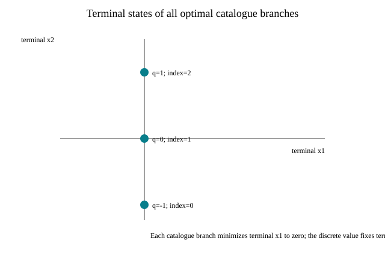

This versioned report runs a one-stage nominal open-loop problem with a two-dimensional state, one bounded continuous control and a three-row finite control catalogue. Every catalogue-index history is solved independently through the registered reach-back strategy. The verified complete branch families all attain terminal objective zero.

| Measured calls | 7 |
|---|---|
| Median API interval | 8002995 ns |
| Range | 7745417–8937342 ns |
| Horizon / catalogue / solved histories | 1 / 3 / 3 |
| Retained relation rows | 63 |
| Retained numeric scalars / bytes | 411 / 3288 bytes |
| Failures | 0 |
| Catalogue index | Discrete value | Objective | Complete-family evidence |
|---|---|---|---|
| 0 | -1 | 0 | registry-verified complete family |
| 1 | 0 | 0 | registry-verified complete family |
| 2 | 1 | 0 | registry-verified complete family |
one solve_finite_mixed_branch_portfolio API call; excludes process startup, registry/scenario construction, JSON serialization and rendering. Process RSS is sampled separately and includes process startup, warmup and the measured calls; its sampling interval and limitation are recorded in measurement.json.
Binary64 numerical assurance. The branch completeness evidence is the registered strategy’s verified complete-family result for this admitted profile; it is not validated arithmetic. The single one-stage fixture describes only this workload. It is not a comparative benchmark, a speedup claim, a hard memory limit, or evidence of asymptotic scalability. Numeric-byte accounting covers H-matrix coefficients and right-hand sides only, excluding object and vector overhead, solver workspace, transient branch materialization and allocator slack.
Scenario: benchmarks/scenarios/ext02-analytic-two-state-mixed-v1.json. Source commit: 5f99b2243e39de22fe4593b3cd96d49e617057cd. Scenario SHA-256: 533ef62feaf01aef883cbeb9b758f7fa225df4cd3b2ba453ef43f141dbc30145. Executable SHA-256: d414ebb2f4c0b7eefd1b9108fda180f333dd90907e6c9e10457c42611614eeb3.
cmake --preset highs -DCSL_ENABLE_QHULL=ON -DCSL_BUILD_EXT02_REPORT=ON
cmake --build --preset highs --target csl_ext02_portfolio_report
ctest --test-dir build/highs -R '^ext02_portfolio_report_smoke$' --output-on-failure
python3 scripts/reports/ext02/collect.py build/highs/csl_ext02_portfolio_report build/highs/ext02-evidence
python3 scripts/reports/ext02/render_saved.py build/highs/ext02-evidence/measurement.json reports/algorithm-results/ext02-two-state-mixed-v1Raw records: JSON; JSONL; CSV; SVG figure.